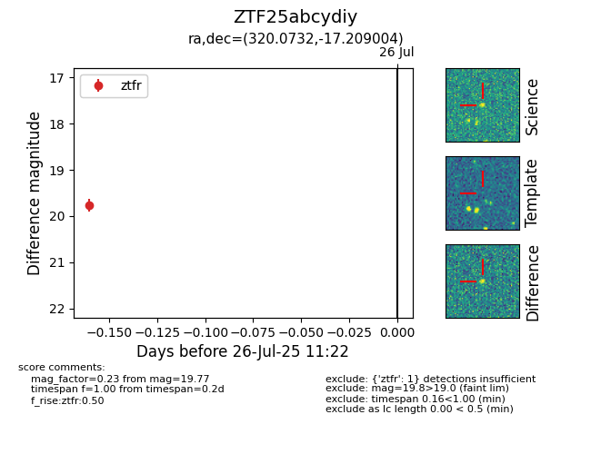

Target ZTF25abcydiy at 2025-07-26 11:22, see:
FINK: fink-portal.org/ZTF25abcydiy
Lasair: lasair-ztf.lsst.ac.uk/objects/ZTF25abcydiy
ALeRCE: alerce.online/object/ZTF25abcydiy
alt names
ZTF25abcydiy (ztf,fink)
coordinates:
equatorial (ra, dec) = (320.0732,-17.20900)
galactic (l, b) = (32.9408,-40.47117)
photometry
last ztfr=19.77
1 ztfr detections
